PART 01 · START HERE
OFFICIAL TRAILER
The Karachi Siege — Official Trailer
First look at Sameer’s race against time across Karachi’s neon-lit intersections, hospital corridors, and back-alley chases.
Set in the streets of Karachi, Pakistan
One stolen phone. Two lives in intensive care. A city-sized conspiracy.
When his father collapses with a sudden heart failure requiring five lakh rupees for immediate surgery, 20-year-old delivery rider Sameer snatches a phone at a Karachi traffic signal—unaware it holds both a child’s life-saving hospital funds and incriminating evidence against a powerful minister.
First look at Sameer’s race against time across Karachi’s neon-lit intersections, hospital corridors, and back-alley chases.
Experience the complete 80-scene AI feature film from Sameer’s 6:00 AM shift to the final broadcast that shakes Karachi.
THE KARACHI SIEGE · COMPLETE AI FEATURE FILM (YOUTUBE: B6pu8312X1o)
Narrative Architecture · Karachi, Pakistan
Sameer, a twenty-year-old delivery rider supporting his ailing father, younger sister Zoya, and elderly Dadi, is pushed to the brink when his father suffers a critical heart attack requiring five lakh rupees for immediate surgery. At a jammed Karachi traffic signal, a split-second mistake pulls him into the crosshairs of an armed political syndicate.
“Between two hospital beds and a stolen screen, one rider has to choose whether desperation will break him—or wake up an entire city.”
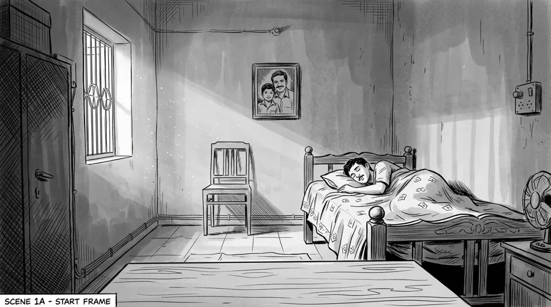
ACT I · SCENES 01–20From a 6:00 AM alarm in a cramped Karachi flat to scorching afternoon delivery shifts, Sameer’s fragile routine shatters when Zoya calls in panic: Abbu has collapsed and needs immediate heart surgery.
View Act I Stills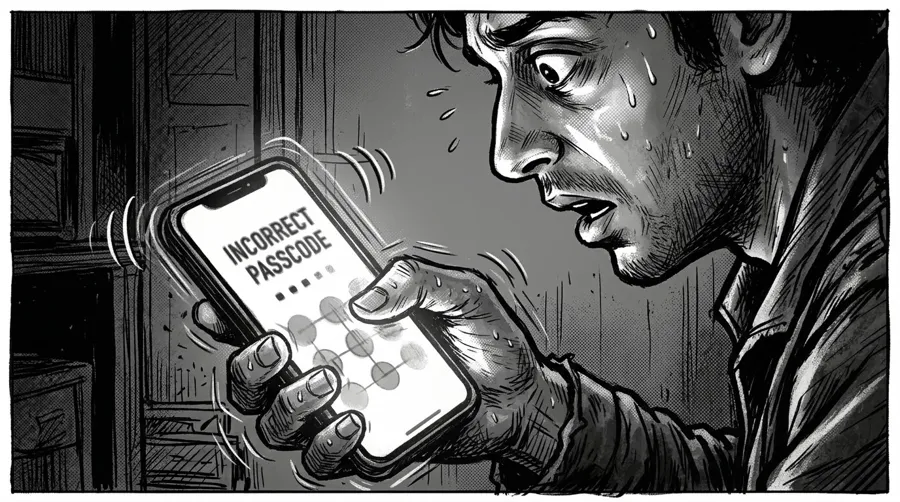
ACT II · SCENES 21–40Cornered by hospital billing deadlines, Sameer snatches a phone through a car window at a red light—only to discover its owner, Ayesha, is trying to pay for her seven-year-old brother’s ICU surgery.
View Act II Stills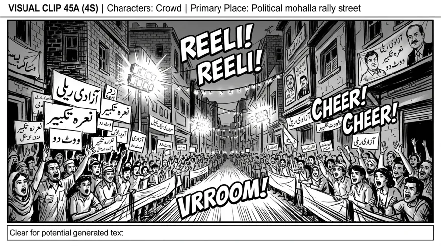
ACT III · SCENES 41–60The phone contains more than hospital keys—it holds encrypted corruption evidence against a sitting minister. Armed guards track Sameer across Karachi’s alleys and hospital parking decks.
View Act III Stills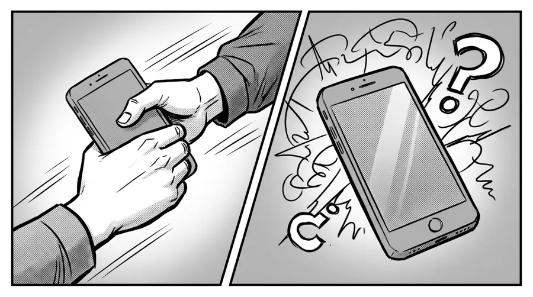
ACT IV · SCENES 61–80Risking his life to return the phone to Ayesha and leak the minister’s files to the press, Sameer turns a moment of guilt into redemption—saving both families as breaking news rocks Karachi.
View Act IV StillsDramatis Personae · 11 Characters
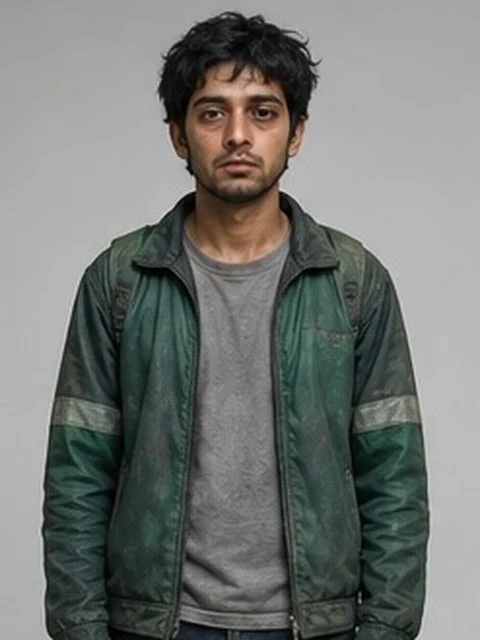
PROTAGONISTDelivery Rider · Age 20
Rides a red 70cc motorbike through scorching Karachi traffic to keep his household afloat after his mother’s passing, carrying the weight of his father’s surgery alone.
Owner of the Phone · Age 22
Fighting to save her seven-year-old brother in intensive care while holding digital evidence that powerful political figures want erased at any cost.
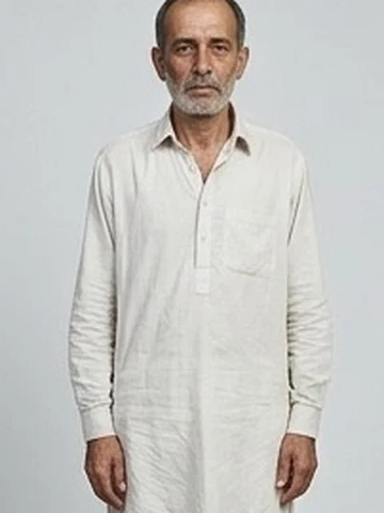
FAMILYSameer’s Father · Age 55
Frail and quiet-spoken, his sudden cardiac collapse triggers the urgent five-lakh-rupee surgery deadline that drives Sameer into the night.
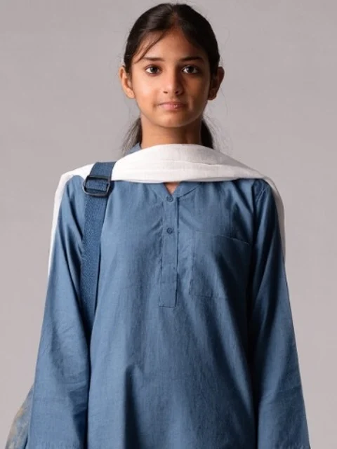
FAMILYSameer’s Sister · Age 14
A diligent schoolgirl hesitant to burden her brother with school fees, who holds the family together at the hospital bedside when their father collapses.
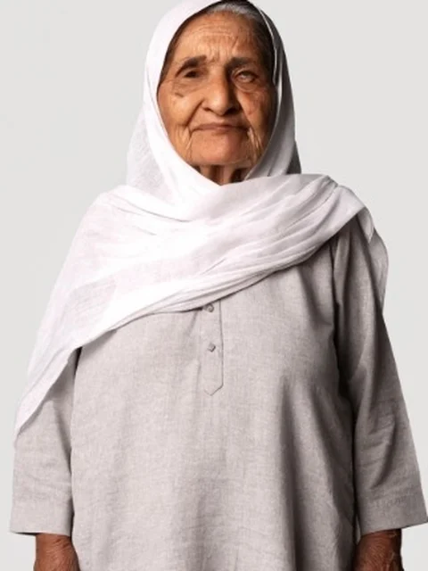
FAMILYGrandmother · Age 75
The spiritual anchor of Sameer’s cramped Karachi home, keeping vigil with her tasbih prayer beads through every hour of the crisis.
Attending Cardiologist
Delivers the stark medical prognosis in the emergency ward and oversees the life-saving surgical intervention once funds are secured.
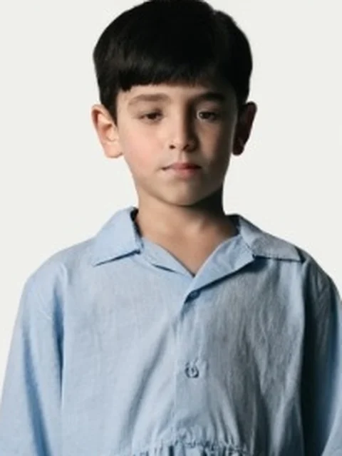
HOSPITALAyesha’s Brother · Age 7
Hooked to ICU monitors, his survival depends on the hospital payment authorization locked inside the stolen smartphone.
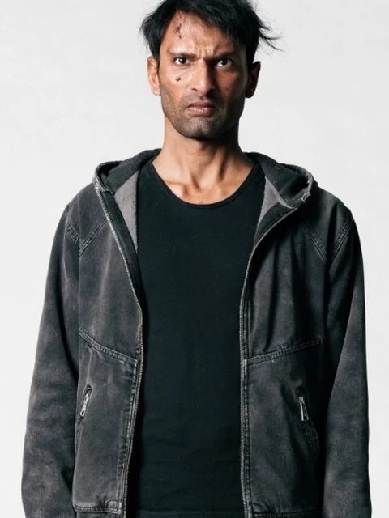
SYNDICATESyndicate Operative
Tracks Sameer’s motorbike into the hospital car park and initiates the confrontation to retrieve the minister’s compromised device.
Enforcer Commander
Commands the street-level hunt across Karachi, cornering Sameer and ordering the relentless pursuit when he escapes on foot.
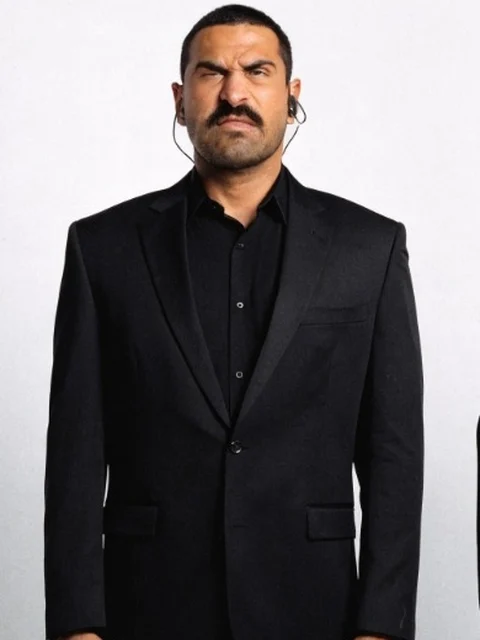
SYNDICATETactical Enforcer
Operates the black Land Cruiser convoy, sweeping Karachi’s intersections to intercept the leaked evidence before it reaches the newsroom.
Prime-Time Broadcast Journalist
Breaks the nationwide television bulletin announcing the minister’s arrest after the evidence from the phone is broadcast across Pakistan.
01 · Visual Continuity
Inspect every keyframe still with scene locations, character callouts, Urdu voice-over dialogue, and interactive lightbox navigation.
Open Storyboard02 · Generative Direction
Search and copy the exact 35mm camera direction, lighting, and lip-sync prompts engineered for MiniMax Hailuo H3 and Seedance.
Explore Prompts03 · Credits & Supervision
Meet Faculty Supervisor Prof. Engr. Imran Alvi and the six computer science filmmakers who built The Karachi Siege.
View Credits